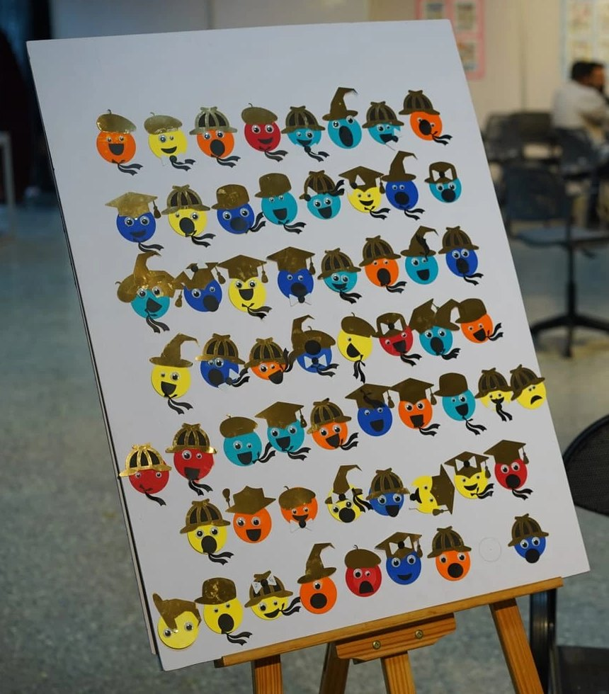
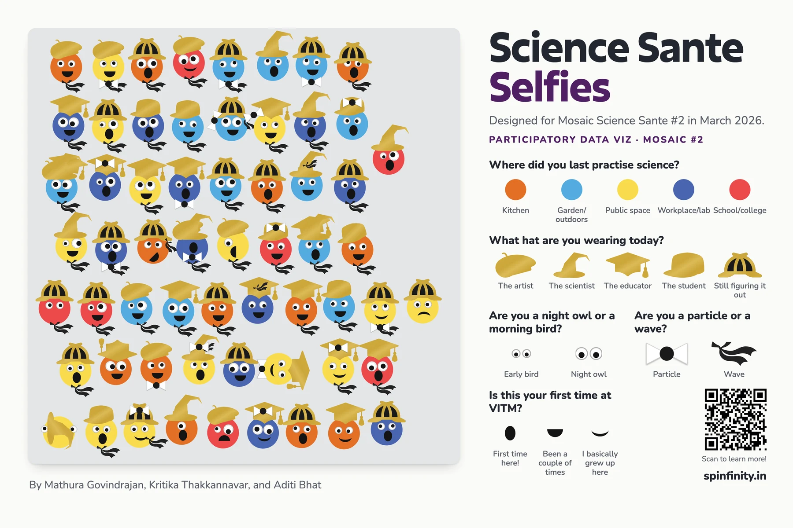

Science Sante Selfies
Designed for Mosaic Science Sante #2 in March 2026.

![The Data selfie instruction sheet. Answer the questions below, for each answer pick a visual element, and stick them all together to reveal your data selfie. What hat are you wearing today: the artist, the scientist, the educator, the student, still figuring it out. Night owl or morning bird: pick your googly eye size. Is this your first time at VITM: first time here, been a couple of times, I basically grew up here. Where did you last practise science: kitchen, garden or outdoors, public space, workplace or lab, school or college. Are you a particle or a wave: your selfie gets a bowtie that matches your nature.](img/instructions.jpg)

download the postcard
The board as it was photographed.
Participatory Data Viz Made for Mosaic #2
By Mathura Govindrajan, Kritika Thakkannavar, and Aditi Bhat